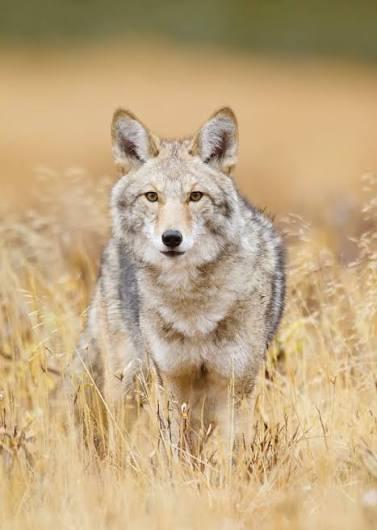
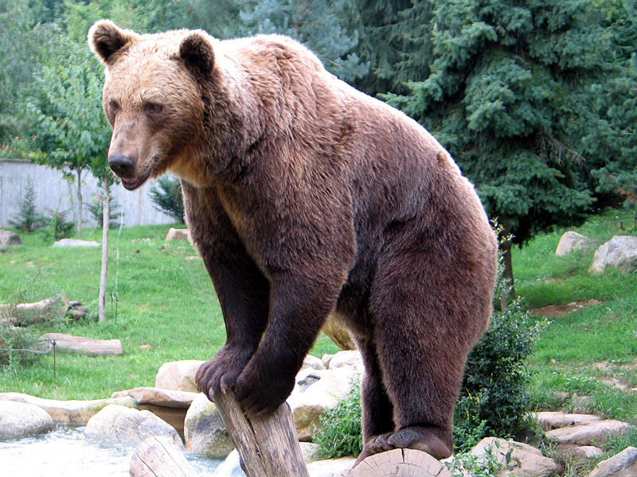

Coyotes are known to have a mixture of gray and red fur, they tend to be smaller than regular gray wolves, but have longer ears. Their frame is
also a lot thinner. They go for rabbits, hares, mice. They also eat fruits such as apples, watermelon, berries. They also go for larger animals
like deer and turkey.

2.Bear
Bears can be either brown, black or polarbear variants. Polar bears are the canrivorous type, but the other two are actually omnivores. They normally eat berries, fish, insects.
Grizzly bears are a lot larger than black bears. Polar bears actually also see humans as a form of food. Polar bears can be found in Russia, USA, Canada, Greenland, Norway.

3.Red fox
Red fox got short limbs and the tail is longer than half the body length, when standing it touches the ground. Red fox has variety of color morphs for its fur, such as red, silver, platinum,
cross, blackish-brown, smoky and samson. They hunt for mice, in which in environment that is filled with snow, they tend to lunge themselves face first on to the snow, observing vibrations from the ground
thats how they can tell if something is lurking within the snow. They also eat berries, apples.